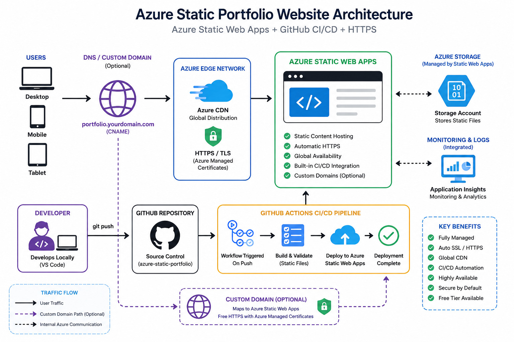
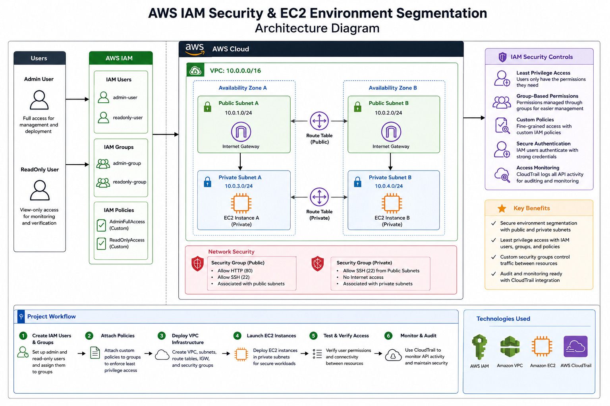
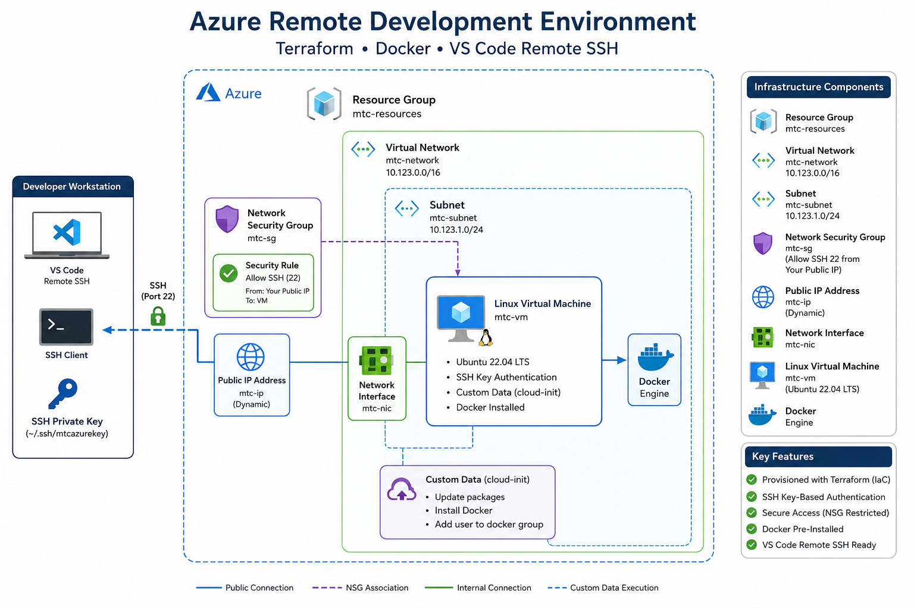
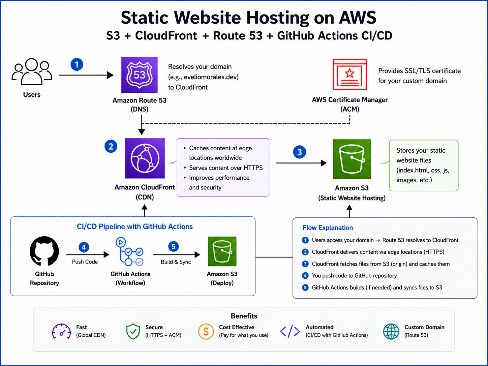
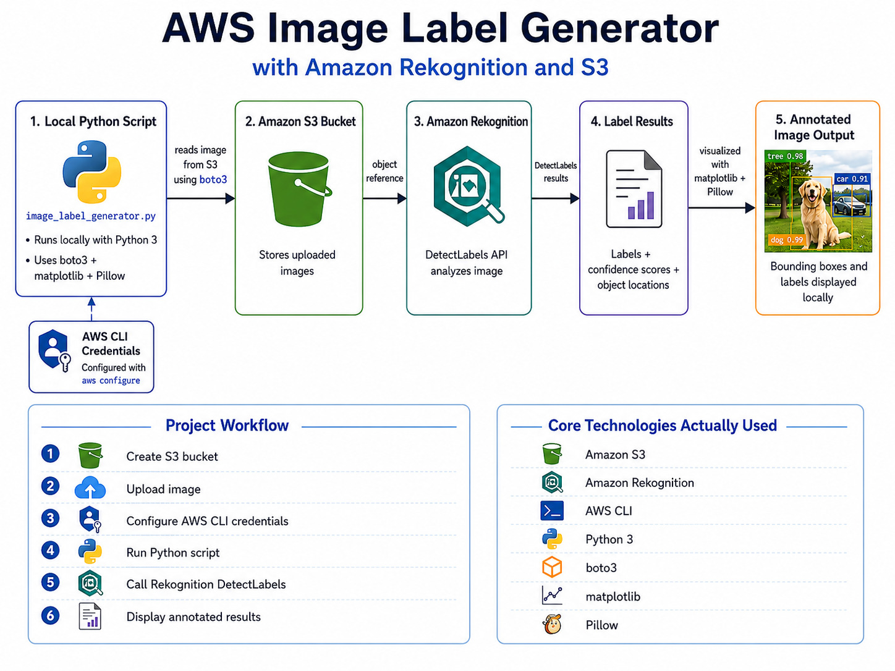
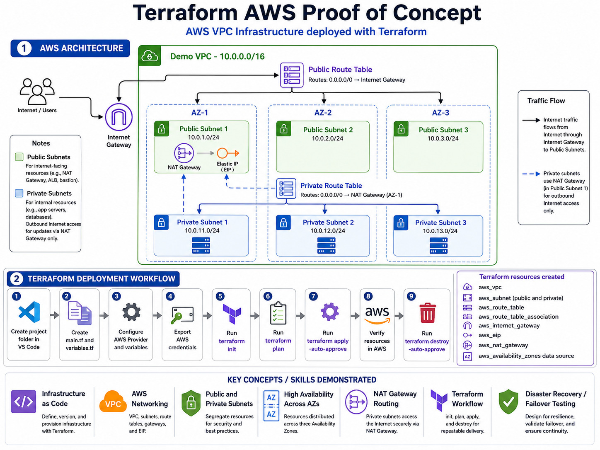

Azure Static Web Apps + GitHub CI/CD
Built and deployed a static portfolio website using Azure Static Web Apps with GitHub-based CI/CD automation.
Skills: Azure Static Web Apps, GitHub Actions, CI/CD, HTML, CSS
I’m a bilingual IT professional focused on technical support, cloud engineering, and cybersecurity. This portfolio highlights my resume, certifications, and hands-on projects using Azure, AWS, GitHub, Terraform, and security-focused tools. My goal is to support users, troubleshoot technical issues, and build secure, well-documented cloud solutions.
I combine customer service experience with hands-on IT, cloud, and cybersecurity projects. I troubleshoot user issues, document technical solutions, work with Windows, Linux, networking fundamentals, and build cloud projects using Azure, AWS, GitHub, and Terraform.
I’m Evelio Morales Jr., a bilingual IT professional from Houston, Texas, focused on building a career in technical support, cloud engineering, and cybersecurity. My background includes customer service, troubleshooting, computer repair, scheduling, and hands-on technology projects. I enjoy solving problems, learning new tools, and turning technical concepts into practical solutions. Through my certifications, labs, and cloud projects, I continue to strengthen my skills and prepare for real-world IT and security roles.
Industry training and certifications supporting my path in IT support, cloud engineering, and cybersecurity.
This section highlights my hands-on projects in IT support, cloud engineering, and cybersecurity. My work includes building cloud-hosted websites, creating infrastructure with Terraform, using GitHub for version control, and documenting each project with clear steps, diagrams, and technical explanations. These projects reflect my commitment to learning by doing and developing the practical skills needed for modern IT and security roles.

Built and deployed a static portfolio website using Azure Static Web Apps with GitHub-based CI/CD automation.
Skills: Azure Static Web Apps, GitHub Actions, CI/CD, HTML, CSS

Designed an AWS security lab using IAM access controls, EC2 resources, and segmented environments to demonstrate least privilege and secure cloud administration.
Skills: AWS IAM, EC2, Security Groups, Least Privilege, Cloud Security

Created a remote development environment using Azure infrastructure, Terraform, Docker, and VS Code SSH to support cloud-based development workflows.
Skills: Azure, Terraform, Docker, VS Code SSH, Linux

Hosted a static website on Amazon S3 to demonstrate cloud storage configuration, public website hosting, and basic AWS deployment practices.
Skills: Amazon S3, AWS, Static Hosting, Bucket Policy, HTML, CSS

Built an image-labeling project using Amazon Rekognition and S3 to identify objects in uploaded images and demonstrate cloud-based AI services.
Skills: Amazon Rekognition, Amazon S3, AWS, Python, Cloud AI

Provisioned a multi-AZ AWS VPC proof of concept with Terraform to demonstrate infrastructure as code, networking, and scalable cloud architecture.
Skills: Terraform, AWS VPC, Subnets, Routing, Infrastructure as Code
I am actively pursuing opportunities in IT support, cloud support, technical support, and entry-level cybersecurity. If you are looking for a bilingual, hands-on candidate with strong troubleshooting skills and a growing cloud/security portfolio, feel free to view my resume, explore my GitHub projects, or contact me directly by email.